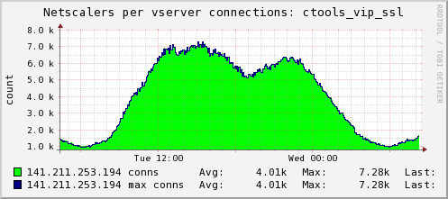

Under the Hood: Using the Data Generated by Sakai
R.P. (Adi) Aditya
© 2010
A running Sakai installation produces a lot of system data. To manage
the flow we have to be able to see noteworthy events and trends "at a
glance".
Data is collected from diverse sources, but it is stored in a
consistent format -- as timeseries data, space-efficient, consolidated
over time since we care less about the details of the long-past than
the general trends.
- Time flows from left to right, with the right-hand end of the graph being "now".
- Often show different data to compare against on
negative x-axis, doesn't mean values are < 0 really
- We have limited colors (that we can easily
distinguish) so some repetition, so use legend and tabular data to
narrow down what is where
- we can see that response time (time to first byte) doesn't track appserver cpu strongly
- maybe it tracks the db response time?
- most likely is Sakai tool usage
 |
 |
- Data for first graph comes directly from the Sakai tables
- hard to check outside of Sakai since notions of
users and sessions is Sakai specific (doesn't conform to Servlet API),
so best check is TCP connections
Longer term trends (1 year in this case) are also interesting to see
and here is an example from data collected directly from Sakai tables:
Load-testing system data -- so we can "see" how close to production it looks for a given test:
We need the realtime data, plus the trends to be widely available to
everyone supporting the application. In fact, it is useful to compare
different Sakai instances, so we make it globally, publically
available at:
http://ctstats.ds.itd.umich.edu
More detail about how we collect this data will be available in
tomorrow morning's session (#156 10am Grand Mesa A) called "Unraveling
the runtime behavior of Sakai" with David Haines.


{kind=link}